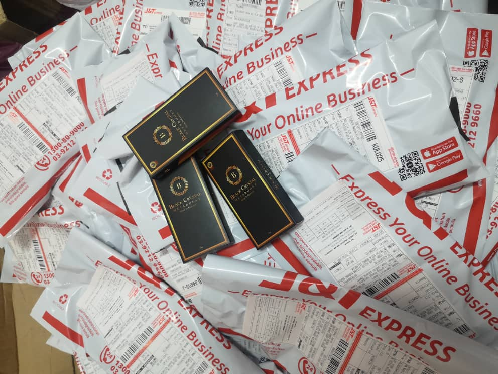

HOME | MYSELF | PORTFOLIO | EXPERIENCES| FAMILY | GALLERY | CONTACT |
I have a lot of life experience at my young age 23 years old. After finishing SPM, while waiting the result to continued my study i decide to working full time at my father tyre workshop which is Nusajaza Tyre Centre at Kota Bharu. At that time, i take a look after boosting company sales by get the crowd from social media platform because i am good at that. Besides that, i also doing outside job to increase my communication skill with the outsider.
After i got my Diploma in Business Study, i be at home and decide to start my online business with my bestfriend and it was still running until today. My father is my mentor in the business world but i need to follow nowadays culture.

NUSAJAZA TYRE CENTRE

TODAY ONLINE BUSINESS
